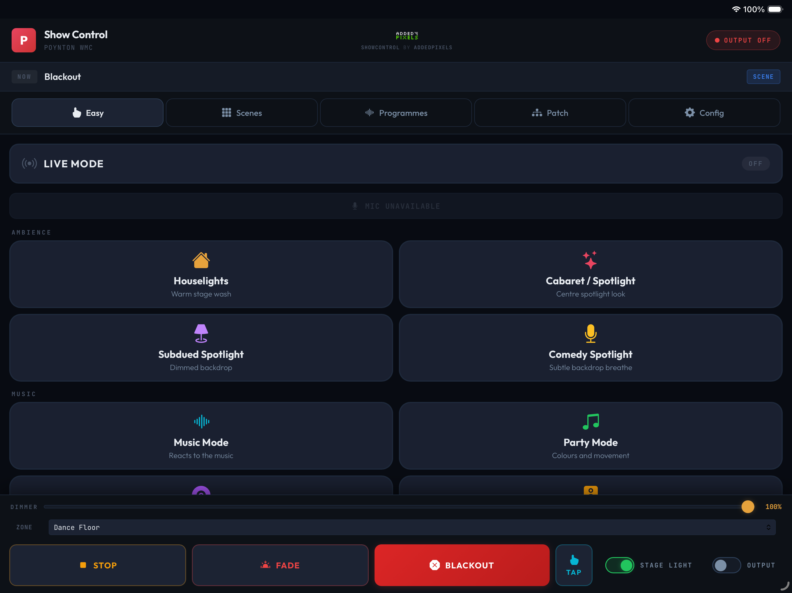
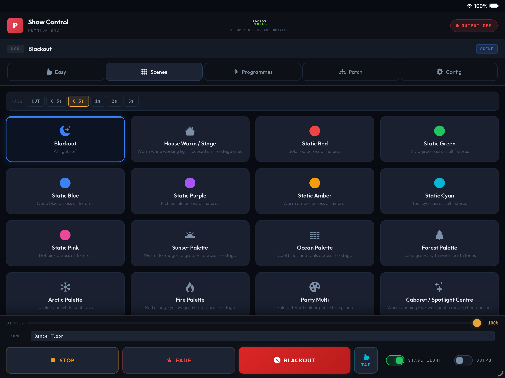
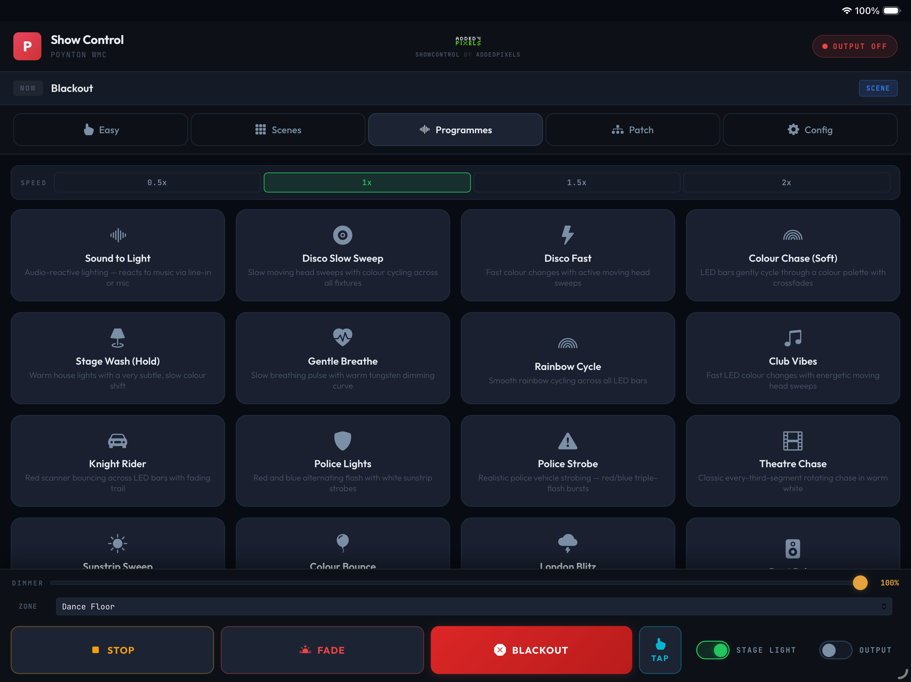
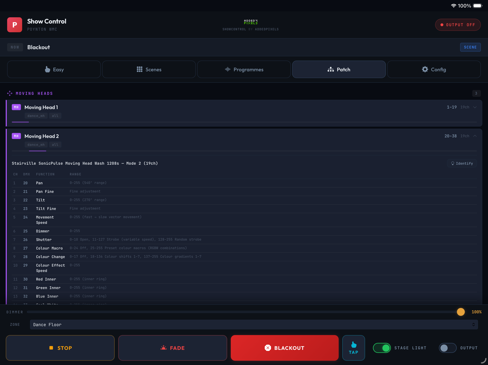
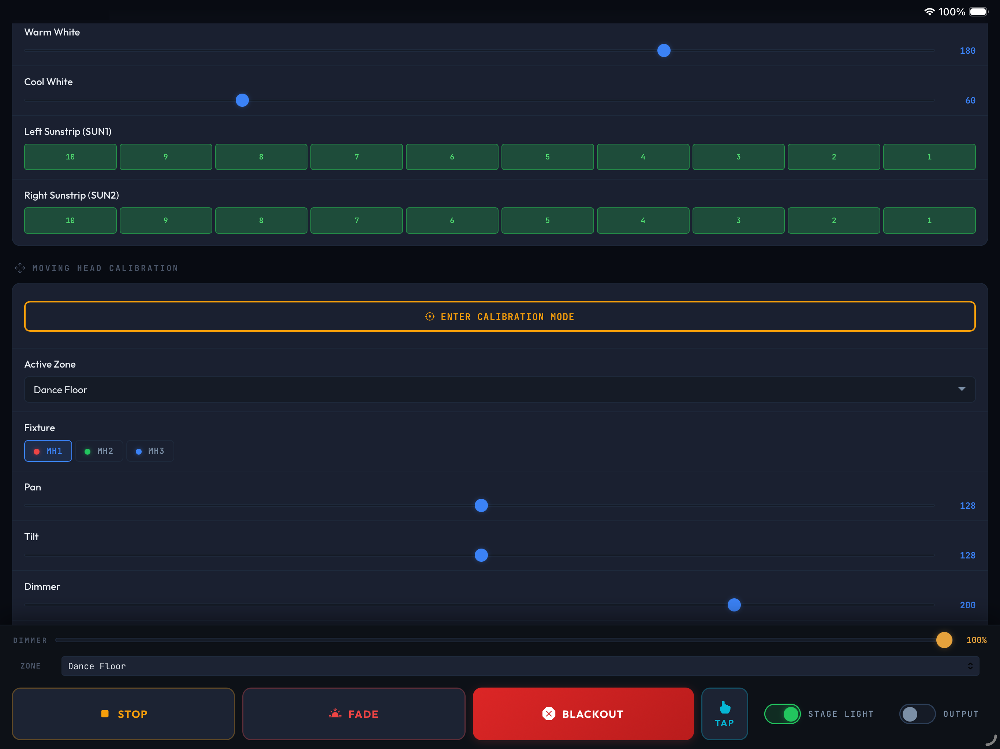

Professional lighting, without needing a professional. And when a professional does show up, everything they need is right there.
Most small-to-medium venues face a common challenge: they invest in modern intelligent lighting, but the people who run the venue day-to-day aren't lighting technicians.
Traditional DMX desks are powerful but intimidating. Generic lighting apps are either too simple or too complex. There's nothing in the middle that actually fits how venues work.
ShowControl bridges this gap.
Powerful but intimidating. Channel faders, cue stacks, programming modes – requires a trained operator.
Either too simple (just on/off) or too complex (another desk in disguise). Never designed for how venues actually work.
Staff learn it in minutes. Visiting engineers connect with zero friction. Built for the venue, from the ground up.
ShowControl runs as a web application on a dedicated server at the venue. Any device with a browser can control the lights – nothing to install, no special hardware.
On any device – iPad, phone, laptop – navigate to the ShowControl interface on the venue's network. No app to download.
Any modern browserChoose from curated scenes and programmes designed specifically for the venue. One tap for houselights, one tap for party mode.
35 frames per secondShowControl sends DMX data via Art-Net over the venue's network to an Art-Net node, which outputs DMX to the fixtures. Built-in smoothing prevents visible LED flicker while still allowing sharp effects like strobes to cut through.
Art-Net / DMX512The interface is organised into tabs that progress from simple one-tap operation to full fixture configuration.

Large, clearly labelled buttons for the most common looks. One tap for houselights, one tap for party mode, one tap for music-reactive lighting. This is where staff spend 95% of their time.
Includes master dimmer, blackout, and Live Mode auto-pilot toggle.

A grid of all available static looks – colour washes, palettes, themed scenes – with a fade time selector. Tap a scene, choose a crossfade duration, done.
Includes themed palettes like sunset, ocean, forest, arctic, and fire.

Animated lighting effects that run continuously – disco sweeps, colour chases, audio-reactive patterns, themed effects. Speed control lets operators dial the energy up or down.
Sound-to-light programmes react in real time to the venue's audio.

A complete fixture reference showing every fixture in the rig with brand, model, DMX mode, channel addresses, and per-channel function descriptions with value ranges.
This is the page a visiting engineer reads to patch into their own software. Includes fixture identify buttons.

Moving head calibration, sunstrip lock settings, per-lamp control, zone management, and system status. The tools needed to fine-tune the installation for the physical space.
Zone restriction prevents moving heads from pointing into the audience.
From the staff who need houselights to the touring engineer who wants full DMX control.
Built on proven technologies and open standards.
Async architecture for low-latency DMX transmission and real-time audio processing.
No framework dependencies. Fast, lightweight, works on any device with a browser.
35 frames per second over the venue's local network. Industry-standard protocol, compatible with all professional lighting equipment.
Smooths LED output to prevent visible flicker, while still allowing sharp effects like strobes and beat-reactive flashes to cut through cleanly.
Analyses audio in real time to detect beats and musical energy. Automatically adjusts to varying volume levels and can use the venue's audio feed or a browser microphone.
Nginx reverse proxy, persistent volumes for configuration and state. Zero-touch operation.
Moving heads are prevented from accidentally strobing during scene transitions. Zone restriction keeps heads from pointing into the audience.
ShowControl isn't trying to replace professional lighting software. It's not competing with LightKey, QLC+, or grandMA. Instead, it's the control layer that makes a venue's lighting accessible to everyone – from the staff who just need houselights, to the club committee member running a cabaret night, to the touring sound engineer who wants to take the lights off auto-pilot and run their own show.
There's no one-size-fits-all configuration. No generic presets. No learning curve that requires a manual. ShowControl is built for each venue from the ground up – and that's exactly what makes it work.
Every ShowControl installation starts with understanding the space, the fixtures, and the people who'll be using it.